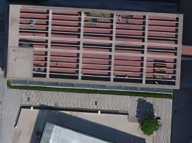

Results: Local Patch Comparison
Slide to compare Ours (Ortho-3DGS) with other methods on a small cropped region:


Other Method vs Ours
We present Ortho-3DGS, a novel approach for true digital orthophoto generation from unmanned aerial vehicle (UAV) imagery. Our method introduces depth-regulated 3D Gaussian Splatting, which leverages geometric constraints and depth priors to ensure spatial accuracy and reduce ghosting artifacts caused by dynamic objects and perspective distortions. The proposed orthophoto rendering pipeline is specifically designed to produce high-quality, distortion-free digital orthophoto maps (TDOMs). Experiments on urban UAV datasets show that Ortho-3DGS outperforms commercial photogrammetry software (ContextCapture, Pix4Dmapper, MetaShape) and NeRF-based orthophoto methods in both radiometric quality and geometric accuracy, while enabling efficient rendering and explicit scene reconstruction via Gaussian ellipsoids.
(Abstract text adapted from the online paper entry.)
Slide to compare Ours (Ortho-3DGS) with other methods on a small cropped region:
Other Method vs Ours
@article{Ortho3DGS2025,
title={Ortho-3DGS: True Digital Orthophoto Generation from Unmanned Aerial Vehicle Imagery Using the Depth-Regulated 3D Gaussian Splatting},
author={Junxing Yang and Zhenglong Cai and Tianjiao Wang and Tong Ye and Haoran Gao and He Huang},
journal={IEEE Journal of Selected Topics in Applied Earth Observations and Remote Sensing},
year={2025},
note={IEEE Xplore document 10930522}
}
Corresponding author: He Huang. Source entry: online abstract / IEEE Xplore. :contentReference[oaicite:1]{index=1}